Contents
Brewer Evaluation
clear all;
file_setup='arenos2019_setup';
eval(file_setup);
Cal.n_inst=find(Cal.brw==174);
Cal.file_latex=fullfile('.','latex',Cal.brw_str{Cal.n_inst});
Cal.dir_figs=fullfile('latex',filesep(),Cal.brw_str{Cal.n_inst},...
filesep(),[Cal.brw_str{Cal.n_inst},'_figures'],filesep());
mkdir(Cal.dir_figs);
try
save(Cal.file_save,'-Append','Cal');
catch exception
fprintf('Error: %s\n Initializing data for Brewer %s\n',exception.message,Cal.brw_name{Cal.n_inst});
save(Cal.file_save);
end
ans =
logical
1
ans =
1×1 cell array
{'IZO#185'}
ans =
21×9 cell array
Columns 1 through 5
{'TSK#005'} {[ 5]} {[2]} {[0]} {'005'}
{'IOS#017'} {[ 17]} {[2]} {[0]} {'017'}
{'SCO#033'} {[ 33]} {[2]} {[0]} {'033'}
{'MAD#070'} {[ 70]} {[4]} {[0]} {'070'}
{'UK_#075'} {[ 75]} {[4]} {[0]} {'075'}
{'POR#102'} {[102]} {[4]} {[0]} {'102'}
{'MUR#117'} {[117]} {[4]} {[0]} {'117'}
{'UK_#126'} {[126]} {[4]} {[0]} {'126'}
{'ARE#150'} {[150]} {[3]} {[0]} {'150'}
{'COR#151'} {[151]} {[4]} {[0]} {'151'}
{'K&Z#158'} {[158]} {[3]} {[0]} {'158'}
{'WRC#163'} {[163]} {[3]} {[0]} {'163'}
{'ZAR#166'} {[166]} {[4]} {[0]} {'166'}
{'UK_#172'} {[172]} {[3]} {[0]} {'172'}
{'JAP#174'} {[174]} {[3]} {[0]} {'174'}
{'IZO#185'} {[185]} {[3]} {[0]} {'185'}
{'MAD#186'} {[186]} {[3]} {[0]} {'186'}
{'CAN#190'} {[190]} {[3]} {[0]} {'190'}
{'TAM#201'} {[201]} {[3]} {[0]} {'201'}
{'DNK#202'} {[202]} {[3]} {[0]} {'202'}
{'DNK#228'} {[228]} {[3]} {[0]} {'228'}
Columns 6 through 9
{'..\005\ICF15117…'} {'..\005\ICF15117…'} {'1838'} {'1838'}
{'..\017\ICF15315…'} {'..\017\ICF15315…'} {'2170'} {'2097'}
{'..\033\ICF15617…'} {'..\033\IOS15617…'} {'2325'} {'2325'}
{'..\070\ICF15617…'} {'..\070\IOS15617…'} {'1685'} {'1685'}
{'..\075\ICF15017…'} {'..\075\ICF15017…'} {'1714'} {'1714'}
{'..\102\ICF15517…'} {'..\102\ICF15517…'} {'2718'} {'2718'}
{'..\117\ICF15517…'} {'..\117\IOS15517…'} {'1620'} {'1620'}
{'..\126\icf15517…'} {'..\126\ICF15517…'} {'1710'} {'1710'}
{'..\150\ICF15617…'} {'..\150\ICF15617…'} {'0322'} {'0322'}
{'..\151\ICF15317…'} {'..\151\IOS15317…'} {'1880'} {'1880'}
{'..\158\ICF21218…'} {'..\158\ICF21218…'} {'0558'} {'0558'}
{'..\163\ICF20118…'} {'..\163\ICF20118…'} {'0274'} {'0274'}
{'..\166\ICF15217…'} {'..\166\IOS15717…'} {'1955'} {'1955'}
{'..\172\ICF15117…'} {'..\172\ICF15117…'} {'0444'} {'0444'}
{'..\174\ICF20718…'} {'..\174\ICF20718…'} {'0605'} {'0605'}
{'..\185\config18…'} {'..\185\config18…'} {'0365'} {'0363'}
{'..\186\ICF15317…'} {'..\186\IOS15317…'} {'0315'} {'0315'}
{'..\190\ICF11419…'} {'..\190\ICF11419…'} {'0410'} {'0410'}
{'..\201\ICF14315…'} {'..\201\ICF14315…'} {'0320'} {'0320'}
{'..\202\ICF15017…'} {'..\202\ICF15017…'} {'0270'} {'0270'}
{'..\228\ICF15017…'} {'..\228\ICF15017…'} {'0242'} {'0242'}
configuration files
close all
[config_def,TCdef,DTdef,ETCdef,A1def,ATdef]=read_icf(Cal.brw_config_files{Cal.n_inst,2});
[config_orig,TCorig,DTorig,ETCorig,A1orig,ATorig]=read_icf(Cal.brw_config_files{Cal.n_inst,1});
Station.OSC=680;
Station.name='';
Station.lat=67;
Station.long=50;
Station.meanozo=350;
cal_step={}; sc_avg={}; sc_raw={}; Args={};
Sun_scan: Before Campaign
close all
[cal_step{1},sc_avg{1},sc_raw{1},Args{1}]=sc_report(Cal.brw_str{Cal.n_inst},Cal.brw_config_files{Cal.n_inst,1},...
'date_range',datenum(Cal.Date.cal_year,1,[1 159]),...
'CSN_orig',config_orig(14),'OSC',Station.OSC,...
'control_flag',1,'residual_limit',35,...
'hg_time',30,'one_flag',0);
174
warning Date error in file
ans =
-1 12 30 0 0 0
OK->B10919.174
warning Date error in file
ans =
-1 12 30 0 0 0
OK->B11019.174
warning Date error in file
ans =
-1 12 30 0 0 0
OK->B11119.174
warning Date error in file
ans =
-1 12 30 0 0 0
Error in measure
./bdata174/B13019.174
OK->B13019.174
warning Date error in file
ans =
-1 12 30 0 0 0
OK->B13119.174
warning Date error in file
ans =
-1 12 30 0 0 0
OK->B13219.174
warning Date error in file
ans =
-1 12 30 0 0 0
OK->B13319.174
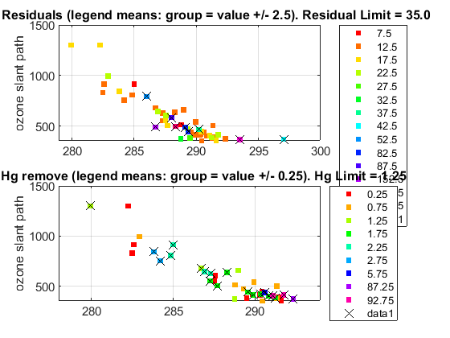

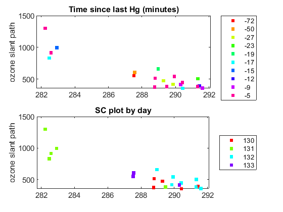

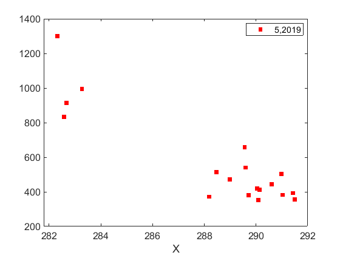

Sun_scan: Campaign
[cal_step{2},sc_avg{2},sc_raw{2},Args{2}]=sc_report(Cal.brw_str{Cal.n_inst},Cal.brw_config_files{Cal.n_inst,2},...
'date_range',datenum(Cal.Date.cal_year,1,Cal.calibration_days{Cal.n_inst,1}([1 end])),...
'CSN_orig',config_def(14),'OSC',Station.OSC,...
'control_flag',1,'residual_limit',35,...
'hg_time',30,'one_flag',1);
174
OK->B17019.174


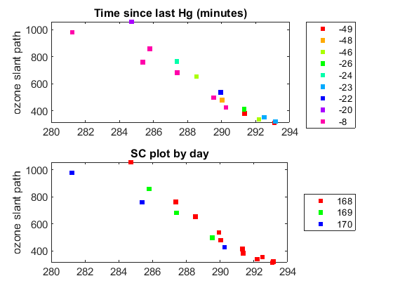 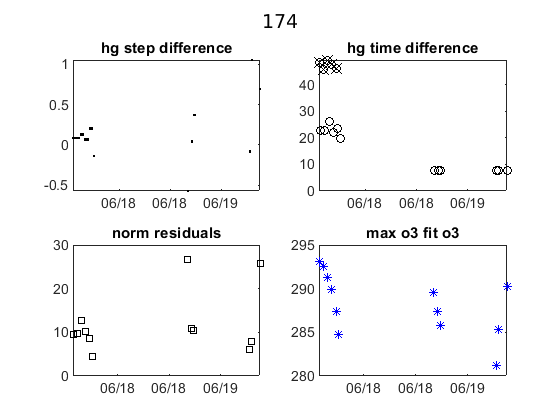

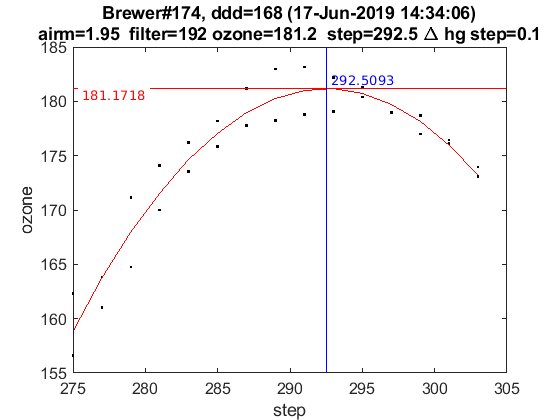

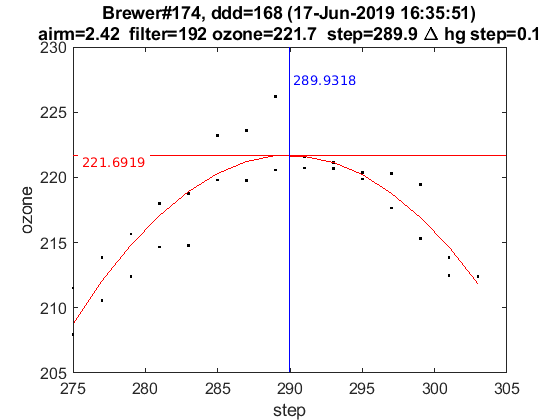

ix=sort(findobj('tag','SC_INDIVIDUAL')); figure(ix); set(get(gca,'title'),'FontSize',8);
printfiles_report(ix',Cal.dir_figs,'aux_pattern',ix,'FontSize',.9,'Width',8.5,'Height',7);
ix=sort(findobj('tag','Final_SC_Calculation'));
if length(ix)>1
Width=8; Height=6;
for i=1:length(ix), figure(ix(i)); set(get(gca,'title'),'FontSize',8); end
else
Width=13; Height=8;
end
printfiles_report(ix',Cal.dir_figs,'aux_pattern',ix,'Width',Width,'Height',Height);
close all
naux =
1
naux =
1
figura =
'174_figures_Final_SC_Calculation_1'
naux =
2
Definicion de variables: SC
if length(cal_step)>1
d_p=[length(cal_step)-1 length(cal_step)]; tags={'','new'};
else
d_p=1; tags={'new'};
end
idx=1; cal_step_error={};
for t=d_p
cal_step_error{t}=round(mean([abs(cal_step{t}(2)-cal_step{t}(3)),abs(cal_step{t}(2)-cal_step{t}(4))]));
latexcmd(fullfile(Cal.file_latex,['cal_wavelengthSC',tags{idx},'_',Cal.brw_str{Cal.n_inst}]),...
['\numSC',tags{idx}],size(sc_avg{t},1),...
['\CALCSTEP',tags{idx}],round(cal_step{t}(1)),...
['\calsteperror',tags{idx}],cal_step_error{t});
idx=idx+1;
end
load(Cal.file_save,'sunscan');sunscan{Cal.n_inst}.cal_step=cal_step;
sunscan{Cal.n_inst}.cal_step_error=cal_step_error;
sunscan{Cal.n_inst}.sc_avg=sc_avg; sunscan{Cal.n_inst}.sc_raw=sc_raw;
sunscan{Cal.n_inst}.info=Args;
save(Cal.file_save,'-APPEND','sunscan');
dsp calibration
res={}; detail={}; DSP_QUAD={}; QUAD_SUM={}; QUAD_DETAIL={};
CUBIC_SUM={}; CUBIC_DETAIL={}; salida={}; CSN_icf={};
l=dir(fullfile('DSP',[Cal.brw_str{Cal.n_inst},'*']));
ldsp=cellstr(cat(1,l.name));
for jj=1:length(ldsp)
if jj==length(ldsp),confign=2; else confign=1; end
try
[res{jj},detail{jj},DSP_QUAD{jj},QUAD_SUM{jj},QUAD_DETAIL{jj},...
CUBIC_SUM{jj},CUBIC_DETAIL{jj},salida{jj},CSN_icf{jj},...
]=dspreport(Cal,'dsp_dir',fullfile('DSP',ldsp{jj}),'config_n',1);
catch
warning(sprintf('Error en %s. DSP: %s',Cal.brw_name{Cal.n_inst},ldsp{jj}));
res{jj}=NaN*ones(15,9,2); detail{jj}=NaN*ones(7,6,15,2); QUAD_DETAIL{jj}=NaN;
end
datefile =
737560
now:W1013519.174
now:W2013519.174
now:W3013519.174
now:W4013419.174
now:W5013419.174
now:W6013519.174
now:W8013419.174
now:W9013419.174
now:W10013419.174
now:W11013519.174
now:W12013419.174
now:W1113519.174
now:W2113519.174
now:W3113519.174
now:W4113419.174
now:W5113419.174
now:W6113519.174
now:W8113419.174
now:W9113419.174
now:W10113419.174
now:W11113519.174
now:W12113419.174
now:W13113419.174
now:W2213519.174
now:W3213519.174
now:W4213419.174
now:W5213419.174
now:W6213519.174
now:W8213419.174
now:W9213419.174
now:W10213419.174
now:W11213519.174
now:W12213419.174
now:W13213419.174
now:W4313419.174
now:W5313419.174
now:W6313519.174
now:W8313419.174
now:W9313419.174
now:W10313419.174
now:W11313519.174
now:W12313419.174
now:W13313419.174
now:W4413419.174
now:W5413419.174
now:W6413519.174
now:W8413419.174
now:W9413419.174
now:W10413419.174
now:W11413519.174
now:W12413419.174
now:W13413419.174
now:W4513419.174
now:W5513419.174
now:W6513519.174
now:W8513419.174
now:W9513419.174
now:W10513419.174
now:W11513519.174
now:W12513419.174
now:W13513419.174
now:W14513419.174
lines_dsp_13419__174
saving alldsp to DSP/174_19_135/alldsp_13419_174.174
eliminamos la linea slit 5 3133.167000 -0.138968
eliminamos la linea slit 4 3133.167000 -0.175923
eliminamos la linea slit 3 3499.950000 -0.187613
eliminamos la linea slit 2 3499.950000 -0.246889
eliminamos la linea slit 1 3403.652000 -0.134519
saving normaldsp to DSP/174_19_135/dspnorm_13419_174.174 as brewer compatible file
Use polyval(pwl(2,:),wl) for calculating normal wavelengths
Saving ozonecoeffs to DSP/174_19_135/opos13419_174.174
284 WL(A) 3031.46 3062.57 3100.14 3134.58 3167.59 3199.73
Res(A) 11.32 11.05 10.84 11.15 10.99 10.83
O3abs(1/cm) 2.6157 1.7892 1.0064 0.6778 0.3749 0.2955 O3: 0.3451
Daumt O3abs(1/cm) 2.6226 1.7834 0.9982 0.6713 0.3681 0.2957 O3: 0.3554
So2abs(1/cm) 3.5520 5.5031 2.3693 1.9692 1.0477 0.6197
Bremen O3abs(1/cm) 2.6257 1.7868 1.0038 0.6809 0.3733 0.2969 O3: 0.3469
Nicolet 1e4*Rayabs(1/cm) 5053.9 4835.2 4587.1 4373.6 4180.8 4003.5 R: 8.3655
Bates(fix) 1e4*Rayabs(1/cm) 0.0 4870.0 4620.0 4410.0 4220.0 4040.0 R: -1.0000
Bodhaine 1e4*Rayabs(1/cm) 5050.4 4833.2 4586.6 4374.3 4182.4 4005.8 R: 7.9992
I0(mW m^-2nm^-1) 11716.73 9417.54 7322.14 4918.92 4065.27 3225.37 ETC: 1402
Ozone offset due to Rayleigh (RayCOeff/O3Coeff): -2.4 DU
Ozone offset due to Rayleigh (Bodhaine): -2.6 DU
Ratio Ozone for So2(A3)= 1.1603, So2/O3(A2)= 2.6595
O3 factor from Bass & Paur to Daumont = 0.9710
O3 factor from Bass & Paur to Bremen = 0.9948
285 WL(A) 3031.53 3062.64 3100.21 3134.65 3167.67 3199.79
Res(A) 11.32 11.05 10.84 11.15 10.99 10.83
O3abs(1/cm) 2.6129 1.7877 1.0061 0.6776 0.3749 0.2950 O3: 0.3441
Daumt O3abs(1/cm) 2.6199 1.7820 0.9978 0.6712 0.3681 0.2954 O3: 0.3546
So2abs(1/cm) 3.5331 5.5286 2.3763 1.9578 1.0489 0.6175
Bremen O3abs(1/cm) 2.6231 1.7853 1.0034 0.6808 0.3733 0.2966 O3: 0.3460
Nicolet 1e4*Rayabs(1/cm) 5053.4 4834.7 4586.6 4373.2 4180.4 4003.1 R: 8.3629
Bates(fix) 1e4*Rayabs(1/cm) 0.0 4870.0 4620.0 4410.0 4220.0 4040.0 R: -1.0000
Bodhaine 1e4*Rayabs(1/cm) 5049.9 4832.7 4586.1 4373.8 4182.0 4005.4 R: 7.9974
I0(mW m^-2nm^-1) 11710.52 9411.13 7297.07 4915.02 4055.24 3215.70 ETC: 1385
Ozone offset due to Rayleigh (RayCOeff/O3Coeff): -2.4 DU
Ozone offset due to Rayleigh (Bodhaine): -2.6 DU
Ratio Ozone for So2(A3)= 1.1574, So2/O3(A2)= 2.6779
O3 factor from Bass & Paur to Daumont = 0.9703
O3 factor from Bass & Paur to Bremen = 0.9944
286 WL(A) 3031.60 3062.72 3100.28 3134.73 3167.74 3199.86
Res(A) 11.32 11.05 10.84 11.15 10.99 10.83
O3abs(1/cm) 2.6101 1.7863 1.0058 0.6774 0.3749 0.2945 O3: 0.3430
Daumt O3abs(1/cm) 2.6171 1.7807 0.9975 0.6711 0.3681 0.2951 O3: 0.3537
So2abs(1/cm) 3.5143 5.5539 2.3838 1.9463 1.0502 0.6154
Bremen O3abs(1/cm) 2.6204 1.7839 1.0031 0.6807 0.3733 0.2962 O3: 0.3451
Nicolet 1e4*Rayabs(1/cm) 5052.9 4834.2 4586.1 4372.8 4180.0 4002.8 R: 8.3602
Bates(fix) 1e4*Rayabs(1/cm) 0.0 4870.0 4620.0 4410.0 4220.0 4040.0 R: -1.0000
Bodhaine 1e4*Rayabs(1/cm) 5049.4 4832.2 4585.6 4373.4 4181.6 4005.1 R: 7.9951
I0(mW m^-2nm^-1) 11704.31 9404.73 7272.14 4911.12 4045.23 3206.04 ETC: 1367
Ozone offset due to Rayleigh (RayCOeff/O3Coeff): -2.4 DU
Ozone offset due to Rayleigh (Bodhaine): -2.6 DU
Ratio Ozone for So2(A3)= 1.1543, So2/O3(A2)= 2.6963
O3 factor from Bass & Paur to Daumont = 0.9697
O3 factor from Bass & Paur to Bremen = 0.9939
287 WL(A) 3031.68 3062.79 3100.35 3134.80 3167.81 3199.93
Res(A) 11.32 11.05 10.84 11.15 10.99 10.83
O3abs(1/cm) 2.6073 1.7848 1.0055 0.6772 0.3749 0.2941 O3: 0.3420
Daumt O3abs(1/cm) 2.6144 1.7793 0.9971 0.6710 0.3681 0.2947 O3: 0.3528
So2abs(1/cm) 3.4957 5.5792 2.3914 1.9349 1.0515 0.6132
Bremen O3abs(1/cm) 2.6178 1.7824 1.0027 0.6805 0.3733 0.2958 O3: 0.3442
Nicolet 1e4*Rayabs(1/cm) 5052.3 4833.7 4585.7 4372.3 4179.6 4002.4 R: 8.3576
Bates(fix) 1e4*Rayabs(1/cm) 0.0 4870.0 4620.0 4410.0 4220.0 4040.0 R: -1.0000
Bodhaine 1e4*Rayabs(1/cm) 5048.9 4831.7 4585.2 4373.0 4181.2 4004.7 R: 7.9899
I0(mW m^-2nm^-1) 11698.12 9398.34 7247.35 4907.22 4035.25 3196.41 ETC: 1350
Ozone offset due to Rayleigh (RayCOeff/O3Coeff): -2.4 DU
Ozone offset due to Rayleigh (Bodhaine): -2.6 DU
Ratio Ozone for So2(A3)= 1.1511, So2/O3(A2)= 2.7149
O3 factor from Bass & Paur to Daumont = 0.9692
O3 factor from Bass & Paur to Bremen = 0.9935
288 WL(A) 3031.75 3062.86 3100.43 3134.87 3167.88 3200.00
Res(A) 11.32 11.05 10.84 11.15 10.99 10.83
O3abs(1/cm) 2.6048 1.7833 1.0052 0.6769 0.3749 0.2936 O3: 0.3409
Daumt O3abs(1/cm) 2.6117 1.7779 0.9968 0.6709 0.3681 0.2943 O3: 0.3519
So2abs(1/cm) 3.4773 5.6034 2.3989 1.9231 1.0527 0.6110
Bremen O3abs(1/cm) 2.6152 1.7810 1.0024 0.6803 0.3733 0.2954 O3: 0.3432
Nicolet 1e4*Rayabs(1/cm) 5051.8 4833.2 4585.2 4371.9 4179.2 4002.0 R: 8.3550
Bates(fix) 1e4*Rayabs(1/cm) 0.0 4870.0 4620.0 4410.0 4220.0 4040.0 R: -1.0000
Bodhaine 1e4*Rayabs(1/cm) 5048.3 4831.2 4584.7 4372.6 4180.8 4004.3 R: 7.9894
I0(mW m^-2nm^-1) 11691.93 9391.96 7223.67 4903.32 4025.29 3186.80 ETC: 1334
Ozone offset due to Rayleigh (RayCOeff/O3Coeff): -2.5 DU
Ozone offset due to Rayleigh (Bodhaine): -2.6 DU
Ratio Ozone for So2(A3)= 1.1480, So2/O3(A2)= 2.7326
O3 factor from Bass & Paur to Daumont = 0.9689
O3 factor from Bass & Paur to Bremen = 0.9934
289 WL(A) 3031.83 3062.94 3100.50 3134.94 3167.95 3200.07
Res(A) 11.32 11.05 10.84 11.15 10.99 10.83
O3abs(1/cm) 2.6023 1.7818 1.0049 0.6766 0.3750 0.2931 O3: 0.3400
Daumt O3abs(1/cm) 2.6091 1.7765 0.9965 0.6707 0.3681 0.2939 O3: 0.3509
So2abs(1/cm) 3.4607 5.6257 2.4067 1.9114 1.0539 0.6087
Bremen O3abs(1/cm) 2.6126 1.7794 1.0020 0.6801 0.3733 0.2950 O3: 0.3422
Nicolet 1e4*Rayabs(1/cm) 5051.3 4832.7 4584.7 4371.5 4178.8 4001.6 R: 8.3524
Bates(fix) 1e4*Rayabs(1/cm) 0.0 4870.0 4620.0 4410.0 4220.0 4040.0 R: -1.0000
Bodhaine 1e4*Rayabs(1/cm) 5047.8 4830.7 4584.3 4372.1 4180.4 4003.9 R: 7.9876
I0(mW m^-2nm^-1) 11685.75 9385.59 7208.62 4899.43 4015.35 3177.20 ETC: 1326
Ozone offset due to Rayleigh (RayCOeff/O3Coeff): -2.5 DU
Ozone offset due to Rayleigh (Bodhaine): -2.6 DU
Ratio Ozone for So2(A3)= 1.1449, So2/O3(A2)= 2.7486
O3 factor from Bass & Paur to Daumont = 0.9689
O3 factor from Bass & Paur to Bremen = 0.9936
290 WL(A) 3031.90 3063.01 3100.57 3135.01 3168.02 3200.14
Res(A) 11.32 11.05 10.84 11.15 10.99 10.83
O3abs(1/cm) 2.5997 1.7802 1.0047 0.6762 0.3750 0.2926 O3: 0.3389
Daumt O3abs(1/cm) 2.6065 1.7751 0.9961 0.6706 0.3682 0.2935 O3: 0.3499
So2abs(1/cm) 3.4445 5.6477 2.4150 1.8998 1.0552 0.6063
Bremen O3abs(1/cm) 2.6101 1.7779 1.0017 0.6799 0.3734 0.2946 O3: 0.3411
Nicolet 1e4*Rayabs(1/cm) 5050.7 4832.2 4584.3 4371.0 4178.4 4001.3 R: 8.3497
Bates(fix) 1e4*Rayabs(1/cm) 0.0 4870.0 4620.0 4410.0 4220.0 4040.0 R: -1.0000
Bodhaine 1e4*Rayabs(1/cm) 5047.3 4830.3 4583.8 4371.7 4180.0 4003.6 R: 7.9832
I0(mW m^-2nm^-1) 11679.58 9379.22 7193.99 4895.54 4005.43 3167.63 ETC: 1319
Ozone offset due to Rayleigh (RayCOeff/O3Coeff): -2.5 DU
Ozone offset due to Rayleigh (Bodhaine): -2.7 DU
Ratio Ozone for So2(A3)= 1.1414, So2/O3(A2)= 2.7653
O3 factor from Bass & Paur to Daumont = 0.9687
O3 factor from Bass & Paur to Bremen = 0.9935
291 WL(A) 3031.97 3063.08 3100.64 3135.08 3168.09 3200.21
Res(A) 11.32 11.05 10.84 11.15 10.99 10.83
O3abs(1/cm) 2.5970 1.7785 1.0044 0.6759 0.3751 0.2920 O3: 0.3377
Daumt O3abs(1/cm) 2.6039 1.7736 0.9958 0.6704 0.3682 0.2931 O3: 0.3488
So2abs(1/cm) 3.4285 5.6698 2.4233 1.8882 1.0564 0.6040
Bremen O3abs(1/cm) 2.6076 1.7764 1.0014 0.6796 0.3734 0.2941 O3: 0.3400
Nicolet 1e4*Rayabs(1/cm) 5050.2 4831.7 4583.8 4370.6 4178.0 4000.9 R: 8.3471
Bates(fix) 1e4*Rayabs(1/cm) 0.0 4870.0 4620.0 4410.0 4220.0 4040.0 R: -1.0000
Bodhaine 1e4*Rayabs(1/cm) 5046.7 4829.8 4583.3 4371.3 4179.6 4003.2 R: 7.9817
I0(mW m^-2nm^-1) 11673.42 9372.87 7179.78 4891.65 3995.53 3158.08 ETC: 1313
Ozone offset due to Rayleigh (RayCOeff/O3Coeff): -2.5 DU
Ozone offset due to Rayleigh (Bodhaine): -2.7 DU
Ratio Ozone for So2(A3)= 1.1377, So2/O3(A2)= 2.7826
O3 factor from Bass & Paur to Daumont = 0.9682
O3 factor from Bass & Paur to Bremen = 0.9931
292 WL(A) 3032.05 3063.16 3100.72 3135.15 3168.16 3200.28
Res(A) 11.32 11.05 10.84 11.15 10.99 10.83
O3abs(1/cm) 2.5944 1.7769 1.0040 0.6755 0.3752 0.2915 O3: 0.3364
Daumt O3abs(1/cm) 2.6013 1.7722 0.9954 0.6701 0.3683 0.2926 O3: 0.3477
So2abs(1/cm) 3.4127 5.6909 2.4317 1.8763 1.0576 0.6016
Bremen O3abs(1/cm) 2.6051 1.7748 1.0010 0.6794 0.3735 0.2937 O3: 0.3389
Nicolet 1e4*Rayabs(1/cm) 5049.7 4831.2 4583.4 4370.2 4177.6 4000.5 R: 8.3445
Bates(fix) 1e4*Rayabs(1/cm) 0.0 4870.0 4620.0 4410.0 4220.0 4040.0 R: -1.0000
Bodhaine 1e4*Rayabs(1/cm) 5046.2 4829.3 4582.9 4370.9 4179.2 4002.8 R: 7.9802
I0(mW m^-2nm^-1) 11667.27 9366.52 7165.46 4887.77 3985.66 3148.55 ETC: 1306
Ozone offset due to Rayleigh (RayCOeff/O3Coeff): -2.5 DU
Ozone offset due to Rayleigh (Bodhaine): -2.7 DU
Ratio Ozone for So2(A3)= 1.1338, So2/O3(A2)= 2.7995
O3 factor from Bass & Paur to Daumont = 0.9677
O3 factor from Bass & Paur to Bremen = 0.9927
293 WL(A) 3032.12 3063.23 3100.79 3135.23 3168.23 3200.35
Res(A) 11.32 11.05 10.84 11.15 10.99 10.83
O3abs(1/cm) 2.5918 1.7753 1.0037 0.6751 0.3752 0.2908 O3: 0.3351
Daumt O3abs(1/cm) 2.5988 1.7707 0.9951 0.6699 0.3683 0.2921 O3: 0.3465
So2abs(1/cm) 3.3985 5.7098 2.4402 1.8645 1.0588 0.5992
Bremen O3abs(1/cm) 2.6026 1.7732 1.0007 0.6791 0.3736 0.2932 O3: 0.3377
Nicolet 1e4*Rayabs(1/cm) 5049.1 4830.7 4582.9 4369.8 4177.2 4000.1 R: 8.3419
Bates(fix) 1e4*Rayabs(1/cm) 0.0 4870.0 4620.0 4410.0 4220.0 4040.0 R: -1.0000
Bodhaine 1e4*Rayabs(1/cm) 5045.7 4828.8 4582.4 4370.4 4178.8 4002.5 R: 7.9761
I0(mW m^-2nm^-1) 11661.13 9360.18 7148.56 4883.89 3975.81 3139.04 ETC: 1296
Ozone offset due to Rayleigh (RayCOeff/O3Coeff): -2.5 DU
Ozone offset due to Rayleigh (Bodhaine): -2.7 DU
Ratio Ozone for So2(A3)= 1.1300, So2/O3(A2)= 2.8146
O3 factor from Bass & Paur to Daumont = 0.9671
O3 factor from Bass & Paur to Bremen = 0.9923
294 WL(A) 3032.19 3063.30 3100.86 3135.30 3168.30 3200.42
Res(A) 11.32 11.05 10.84 11.15 10.99 10.83
O3abs(1/cm) 2.5892 1.7736 1.0034 0.6746 0.3753 0.2902 O3: 0.3337
Daumt O3abs(1/cm) 2.5962 1.7692 0.9948 0.6696 0.3684 0.2917 O3: 0.3453
So2abs(1/cm) 3.3849 5.7283 2.4493 1.8528 1.0599 0.5967
Bremen O3abs(1/cm) 2.6002 1.7716 1.0003 0.6787 0.3737 0.2927 O3: 0.3364
Nicolet 1e4*Rayabs(1/cm) 5048.6 4830.2 4582.4 4369.3 4176.8 3999.8 R: 8.3393
Bates(fix) 1e4*Rayabs(1/cm) 0.0 4870.0 4620.0 4410.0 4220.0 4040.0 R: -1.0000
Bodhaine 1e4*Rayabs(1/cm) 5045.1 4828.3 4582.0 4370.0 4178.4 4002.1 R: 7.9731
I0(mW m^-2nm^-1) 11654.99 9353.85 7131.72 4880.01 3965.98 3130.23 ETC: 1288
Ozone offset due to Rayleigh (RayCOeff/O3Coeff): -2.5 DU
Ozone offset due to Rayleigh (Bodhaine): -2.7 DU
Ratio Ozone for So2(A3)= 1.1260, So2/O3(A2)= 2.8296
O3 factor from Bass & Paur to Daumont = 0.9666
O3 factor from Bass & Paur to Bremen = 0.9920
saving powfiu7 to DSP/174_19_135/dsp_13419_174.174
freecoef =
4
freecoef =
9
freecoef =
9
freecoef =
9
freecoef =
9
freecoef =
9
freecoef =
9
freecoef =
9
freecoef =
9
freecoef =
9
saving data to file:DSP/174_19_135/dsp_13419_174.174
Use brstps2 to calculate steps and wavelengths
Saving ozonecoeffs to DSP/174_19_135/opos_pow7_13419_174.174
284 WL(A) 3031.50 3062.65 3100.18 3134.74 3167.75 3199.84
Res(A) 11.31 11.05 10.83 11.15 10.98 10.82
O3abs(1/cm) 2.6141 1.7877 1.0062 0.6774 0.3749 0.2948 O3: 0.3438
Daumt O3abs(1/cm) 2.6210 1.7820 0.9980 0.6711 0.3681 0.2952 O3: 0.3545
So2abs(1/cm) 3.5407 5.5292 2.3735 1.9435 1.0505 0.6163
Bremen O3abs(1/cm) 2.6242 1.7853 1.0035 0.6806 0.3733 0.2964 O3: 0.3459
Nicolet 1e4*Rayabs(1/cm) 5053.6 4834.7 4586.8 4372.7 4180.0 4002.9 R: 9.4678
Bates(fix) 1e4*Rayabs(1/cm) 0.0 4870.0 4620.0 4410.0 4220.0 4040.0 R: -1.0000
Bodhaine 1e4*Rayabs(1/cm) 5050.1 4832.7 4586.3 4373.3 4181.5 4005.2 R: 9.0967
I0(mW m^-2nm^-1) 11713.23 9411.03 7306.38 4910.17 4043.25 3209.86 ETC: 1413
Ozone offset due to Rayleigh (RayCOeff/O3Coeff): -2.8 DU
Ozone offset due to Rayleigh (Bodhaine): -2.9 DU
Ratio Ozone for So2(A3)= 1.1564, So2/O3(A2)= 2.6715
O3 factor from Bass & Paur to Daumont = 0.9699
O3 factor from Bass & Paur to Bremen = 0.9940
285 WL(A) 3031.57 3062.72 3100.26 3134.81 3167.82 3199.91
Res(A) 11.31 11.05 10.83 11.15 10.98 10.82
O3abs(1/cm) 2.6112 1.7863 1.0059 0.6771 0.3749 0.2943 O3: 0.3428
Daumt O3abs(1/cm) 2.6183 1.7807 0.9976 0.6710 0.3681 0.2949 O3: 0.3536
So2abs(1/cm) 3.5218 5.5546 2.3810 1.9321 1.0517 0.6141
Bremen O3abs(1/cm) 2.6215 1.7839 1.0032 0.6804 0.3733 0.2960 O3: 0.3450
Nicolet 1e4*Rayabs(1/cm) 5053.1 4834.2 4586.3 4372.2 4179.6 4002.5 R: 9.4654
Bates(fix) 1e4*Rayabs(1/cm) 0.0 4870.0 4620.0 4410.0 4220.0 4040.0 R: -1.0000
Bodhaine 1e4*Rayabs(1/cm) 5049.6 4832.2 4585.8 4372.9 4181.1 4004.8 R: 9.0914
I0(mW m^-2nm^-1) 11707.02 9404.63 7281.37 4906.27 4033.27 3200.20 ETC: 1395
Ozone offset due to Rayleigh (RayCOeff/O3Coeff): -2.8 DU
Ozone offset due to Rayleigh (Bodhaine): -2.9 DU
Ratio Ozone for So2(A3)= 1.1533, So2/O3(A2)= 2.6902
O3 factor from Bass & Paur to Daumont = 0.9693
O3 factor from Bass & Paur to Bremen = 0.9935
286 WL(A) 3031.65 3062.79 3100.33 3134.89 3167.89 3199.98
Res(A) 11.31 11.05 10.83 11.15 10.98 10.82
O3abs(1/cm) 2.6084 1.7848 1.0056 0.6768 0.3749 0.2938 O3: 0.3417
Daumt O3abs(1/cm) 2.6155 1.7793 0.9973 0.6708 0.3681 0.2945 O3: 0.3527
So2abs(1/cm) 3.5031 5.5799 2.3885 1.9202 1.0529 0.6119
Bremen O3abs(1/cm) 2.6189 1.7824 1.0029 0.6803 0.3733 0.2956 O3: 0.3440
Nicolet 1e4*Rayabs(1/cm) 5052.6 4833.7 4585.8 4371.8 4179.2 4002.2 R: 9.4631
Bates(fix) 1e4*Rayabs(1/cm) 0.0 4870.0 4620.0 4410.0 4220.0 4040.0 R: -1.0000
Bodhaine 1e4*Rayabs(1/cm) 5049.1 4831.7 4585.3 4372.5 4180.7 4004.5 R: 9.0942
I0(mW m^-2nm^-1) 11700.82 9398.24 7256.51 4902.38 4023.30 3190.56 ETC: 1378
Ozone offset due to Rayleigh (RayCOeff/O3Coeff): -2.8 DU
Ozone offset due to Rayleigh (Bodhaine): -3.0 DU
Ratio Ozone for So2(A3)= 1.1502, So2/O3(A2)= 2.7088
O3 factor from Bass & Paur to Daumont = 0.9690
O3 factor from Bass & Paur to Bremen = 0.9934
287 WL(A) 3031.72 3062.86 3100.40 3134.96 3167.96 3200.05
Res(A) 11.31 11.05 10.83 11.15 10.98 10.82
O3abs(1/cm) 2.6058 1.7833 1.0053 0.6765 0.3750 0.2933 O3: 0.3408
Daumt O3abs(1/cm) 2.6129 1.7779 0.9969 0.6707 0.3681 0.2941 O3: 0.3517
So2abs(1/cm) 3.4847 5.6040 2.3961 1.9085 1.0542 0.6096
Bremen O3abs(1/cm) 2.6163 1.7809 1.0025 0.6801 0.3733 0.2952 O3: 0.3430
Nicolet 1e4*Rayabs(1/cm) 5052.0 4833.2 4585.4 4371.4 4178.8 4001.8 R: 9.4607
Bates(fix) 1e4*Rayabs(1/cm) 0.0 4870.0 4620.0 4410.0 4220.0 4040.0 R: -1.0000
Bodhaine 1e4*Rayabs(1/cm) 5048.6 4831.2 4584.9 4372.0 4180.3 4004.1 R: 9.0901
I0(mW m^-2nm^-1) 11694.62 9391.85 7231.78 4898.49 4013.36 3180.95 ETC: 1361
Ozone offset due to Rayleigh (RayCOeff/O3Coeff): -2.8 DU
Ozone offset due to Rayleigh (Bodhaine): -3.0 DU
Ratio Ozone for So2(A3)= 1.1471, So2/O3(A2)= 2.7263
O3 factor from Bass & Paur to Daumont = 0.9689
O3 factor from Bass & Paur to Bremen = 0.9934
288 WL(A) 3031.79 3062.94 3100.47 3135.03 3168.03 3200.12
Res(A) 11.31 11.05 10.83 11.15 10.98 10.82
O3abs(1/cm) 2.6033 1.7818 1.0050 0.6761 0.3750 0.2928 O3: 0.3397
Daumt O3abs(1/cm) 2.6102 1.7765 0.9966 0.6705 0.3682 0.2937 O3: 0.3507
So2abs(1/cm) 3.4673 5.6263 2.4037 1.8969 1.0554 0.6073
Bremen O3abs(1/cm) 2.6137 1.7794 1.0022 0.6798 0.3734 0.2948 O3: 0.3419
Nicolet 1e4*Rayabs(1/cm) 5051.5 4832.7 4584.9 4370.9 4178.4 4001.4 R: 9.4583
Bates(fix) 1e4*Rayabs(1/cm) 0.0 4870.0 4620.0 4410.0 4220.0 4040.0 R: -1.0000
Bodhaine 1e4*Rayabs(1/cm) 5048.0 4830.7 4584.4 4371.6 4179.9 4003.7 R: 9.0851
I0(mW m^-2nm^-1) 11688.44 9385.48 7214.61 4894.60 4003.45 3171.35 ETC: 1351
Ozone offset due to Rayleigh (RayCOeff/O3Coeff): -2.8 DU
Ozone offset due to Rayleigh (Bodhaine): -3.0 DU
Ratio Ozone for So2(A3)= 1.1437, So2/O3(A2)= 2.7427
O3 factor from Bass & Paur to Daumont = 0.9687
O3 factor from Bass & Paur to Bremen = 0.9934
289 WL(A) 3031.87 3063.01 3100.54 3135.10 3168.10 3200.19
Res(A) 11.31 11.05 10.83 11.15 10.98 10.82
O3abs(1/cm) 2.6008 1.7802 1.0048 0.6758 0.3751 0.2923 O3: 0.3386
Daumt O3abs(1/cm) 2.6076 1.7751 0.9962 0.6703 0.3682 0.2933 O3: 0.3496
So2abs(1/cm) 3.4509 5.6484 2.4119 1.8853 1.0566 0.6049
Bremen O3abs(1/cm) 2.6111 1.7779 1.0018 0.6796 0.3734 0.2943 O3: 0.3409
Nicolet 1e4*Rayabs(1/cm) 5051.0 4832.2 4584.4 4370.5 4178.0 4001.0 R: 9.4560
Bates(fix) 1e4*Rayabs(1/cm) 0.0 4870.0 4620.0 4410.0 4220.0 4040.0 R: -1.0000
Bodhaine 1e4*Rayabs(1/cm) 5047.5 4830.2 4584.0 4371.2 4179.5 4003.3 R: 9.0855
I0(mW m^-2nm^-1) 11682.26 9379.11 7199.82 4890.71 3993.55 3161.78 ETC: 1344
Ozone offset due to Rayleigh (RayCOeff/O3Coeff): -2.8 DU
Ozone offset due to Rayleigh (Bodhaine): -3.0 DU
Ratio Ozone for So2(A3)= 1.1401, So2/O3(A2)= 2.7598
O3 factor from Bass & Paur to Daumont = 0.9684
O3 factor from Bass & Paur to Bremen = 0.9932
290 WL(A) 3031.94 3063.08 3100.62 3135.17 3168.17 3200.26
Res(A) 11.31 11.05 10.83 11.15 10.98 10.82
O3abs(1/cm) 2.5982 1.7785 1.0045 0.6754 0.3752 0.2917 O3: 0.3373
Daumt O3abs(1/cm) 2.6049 1.7736 0.9959 0.6701 0.3683 0.2928 O3: 0.3485
So2abs(1/cm) 3.4348 5.6704 2.4202 1.8733 1.0578 0.6026
Bremen O3abs(1/cm) 2.6086 1.7764 1.0015 0.6793 0.3735 0.2939 O3: 0.3397
Nicolet 1e4*Rayabs(1/cm) 5050.4 4831.7 4584.0 4370.1 4177.6 4000.7 R: 9.4536
Bates(fix) 1e4*Rayabs(1/cm) 0.0 4870.0 4620.0 4410.0 4220.0 4040.0 R: -1.0000
Bodhaine 1e4*Rayabs(1/cm) 5047.0 4829.7 4583.5 4370.8 4179.1 4003.0 R: 9.0835
I0(mW m^-2nm^-1) 11676.10 9372.75 7185.44 4886.83 3983.68 3152.23 ETC: 1337
Ozone offset due to Rayleigh (RayCOeff/O3Coeff): -2.8 DU
Ozone offset due to Rayleigh (Bodhaine): -3.0 DU
Ratio Ozone for So2(A3)= 1.1362, So2/O3(A2)= 2.7775
O3 factor from Bass & Paur to Daumont = 0.9680
O3 factor from Bass & Paur to Bremen = 0.9930
291 WL(A) 3032.02 3063.16 3100.69 3135.24 3168.24 3200.32
Res(A) 11.31 11.05 10.83 11.15 10.98 10.82
O3abs(1/cm) 2.5955 1.7769 1.0042 0.6750 0.3753 0.2911 O3: 0.3360
Daumt O3abs(1/cm) 2.6024 1.7722 0.9956 0.6698 0.3683 0.2924 O3: 0.3473
So2abs(1/cm) 3.4190 5.6914 2.4286 1.8616 1.0590 0.6002
Bremen O3abs(1/cm) 2.6061 1.7748 1.0012 0.6790 0.3736 0.2934 O3: 0.3385
Nicolet 1e4*Rayabs(1/cm) 5049.9 4831.2 4583.5 4369.7 4177.2 4000.3 R: 9.4513
Bates(fix) 1e4*Rayabs(1/cm) 0.0 4870.0 4620.0 4410.0 4220.0 4040.0 R: -1.0000
Bodhaine 1e4*Rayabs(1/cm) 5046.4 4829.3 4583.1 4370.3 4178.7 4002.6 R: 9.0798
I0(mW m^-2nm^-1) 11669.94 9366.40 7171.47 4882.96 3973.83 3142.69 ETC: 1330
Ozone offset due to Rayleigh (RayCOeff/O3Coeff): -2.8 DU
Ozone offset due to Rayleigh (Bodhaine): -3.0 DU
Ratio Ozone for So2(A3)= 1.1324, So2/O3(A2)= 2.7944
O3 factor from Bass & Paur to Daumont = 0.9674
O3 factor from Bass & Paur to Bremen = 0.9925
292 WL(A) 3032.09 3063.23 3100.76 3135.31 3168.31 3200.39
Res(A) 11.31 11.05 10.83 11.15 10.98 10.82
O3abs(1/cm) 2.5929 1.7753 1.0038 0.6745 0.3753 0.2905 O3: 0.3347
Daumt O3abs(1/cm) 2.5998 1.7707 0.9952 0.6695 0.3684 0.2919 O3: 0.3461
So2abs(1/cm) 3.4041 5.7104 2.4370 1.8499 1.0602 0.5977
Bremen O3abs(1/cm) 2.6037 1.7732 1.0008 0.6787 0.3737 0.2929 O3: 0.3373
Nicolet 1e4*Rayabs(1/cm) 5049.4 4830.7 4583.1 4369.2 4176.8 3999.9 R: 9.4489
Bates(fix) 1e4*Rayabs(1/cm) 0.0 4870.0 4620.0 4410.0 4220.0 4040.0 R: -1.0000
Bodhaine 1e4*Rayabs(1/cm) 5045.9 4828.8 4582.6 4369.9 4178.3 4002.2 R: 9.0768
I0(mW m^-2nm^-1) 11663.79 9360.07 7155.19 4879.08 3964.00 3133.18 ETC: 1321
Ozone offset due to Rayleigh (RayCOeff/O3Coeff): -2.8 DU
Ozone offset due to Rayleigh (Bodhaine): -3.0 DU
Ratio Ozone for So2(A3)= 1.1284, So2/O3(A2)= 2.8097
O3 factor from Bass & Paur to Daumont = 0.9669
O3 factor from Bass & Paur to Bremen = 0.9922
293 WL(A) 3032.16 3063.30 3100.83 3135.39 3168.38 3200.46
Res(A) 11.31 11.05 10.83 11.15 10.98 10.82
O3abs(1/cm) 2.5902 1.7736 1.0035 0.6740 0.3754 0.2899 O3: 0.3334
Daumt O3abs(1/cm) 2.5973 1.7692 0.9949 0.6692 0.3685 0.2914 O3: 0.3449
So2abs(1/cm) 3.3902 5.7289 2.4459 1.8382 1.0613 0.5954
Bremen O3abs(1/cm) 2.6012 1.7716 1.0005 0.6783 0.3738 0.2924 O3: 0.3361
Nicolet 1e4*Rayabs(1/cm) 5048.8 4830.2 4582.6 4368.8 4176.4 3999.6 R: 9.4465
Bates(fix) 1e4*Rayabs(1/cm) 0.0 4870.0 4620.0 4410.0 4220.0 4040.0 R: -1.0000
Bodhaine 1e4*Rayabs(1/cm) 5045.4 4828.3 4582.1 4369.5 4177.9 4001.9 R: 9.0781
I0(mW m^-2nm^-1) 11657.64 9353.73 7138.32 4875.21 3954.19 3128.54 ETC: 1320
Ozone offset due to Rayleigh (RayCOeff/O3Coeff): -2.8 DU
Ozone offset due to Rayleigh (Bodhaine): -3.0 DU
Ratio Ozone for So2(A3)= 1.1246, So2/O3(A2)= 2.8246
O3 factor from Bass & Paur to Daumont = 0.9667
O3 factor from Bass & Paur to Bremen = 0.9921
294 WL(A) 3032.24 3063.38 3100.91 3135.46 3168.46 3200.53
Res(A) 11.31 11.05 10.83 11.15 10.98 10.82
O3abs(1/cm) 2.5879 1.7720 1.0032 0.6735 0.3755 0.2893 O3: 0.3322
Daumt O3abs(1/cm) 2.5948 1.7676 0.9945 0.6689 0.3686 0.2909 O3: 0.3436
So2abs(1/cm) 3.3768 5.7474 2.4549 1.8263 1.0624 0.5929
Bremen O3abs(1/cm) 2.5988 1.7700 1.0001 0.6779 0.3739 0.2918 O3: 0.3348
Nicolet 1e4*Rayabs(1/cm) 5048.3 4829.7 4582.1 4368.4 4176.0 3999.2 R: 9.4442
Bates(fix) 1e4*Rayabs(1/cm) 0.0 4870.0 4620.0 4410.0 4220.0 4040.0 R: -1.0000
Bodhaine 1e4*Rayabs(1/cm) 5044.8 4827.8 4581.7 4369.0 4177.5 4001.5 R: 9.0731
I0(mW m^-2nm^-1) 11651.51 9347.41 7121.51 4871.34 3944.40 3125.45 ETC: 1321
Ozone offset due to Rayleigh (RayCOeff/O3Coeff): -2.8 DU
Ozone offset due to Rayleigh (Bodhaine): -3.0 DU
Ratio Ozone for So2(A3)= 1.1207, So2/O3(A2)= 2.8397
O3 factor from Bass & Paur to Daumont = 0.9667
O3 factor from Bass & Paur to Bremen = 0.9923


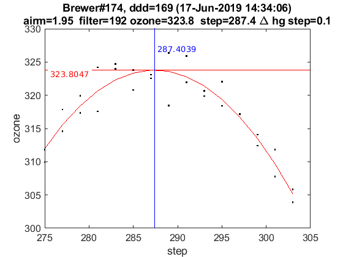 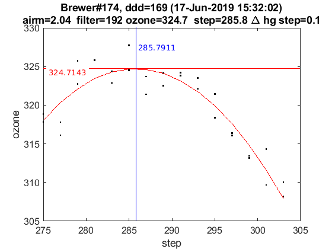 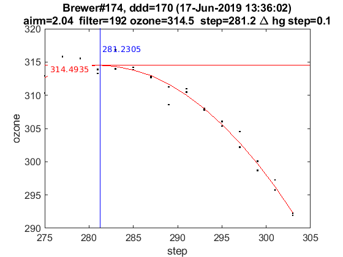 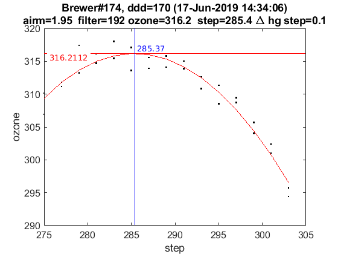 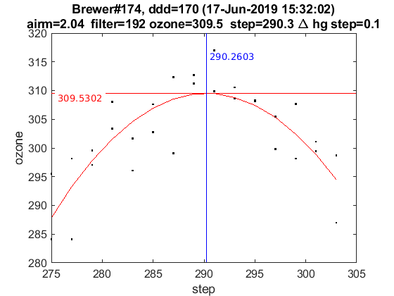 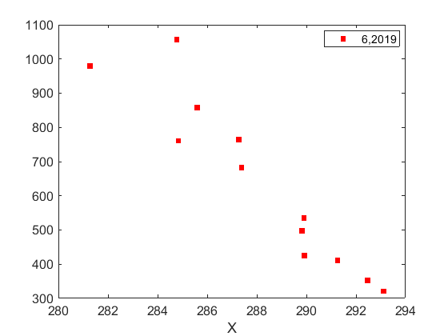 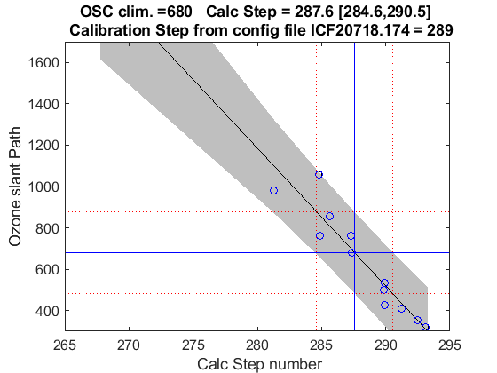
end
load(Cal.file_save,'dsp_summary');
dates=sscanf(cell2str(cat(2,ldsp')),'%03d_%03d_%03d,',[3,Inf]);
dates=datejul(dates(2:3,:)');dates=dates(:,1);
dsp_summary{Cal.n_inst}.info=cellstr(datestr(dates))';
dsp_summary{Cal.n_inst}.res=res;
dsp_summary{Cal.n_inst}.detail=detail;
dsp_summary{Cal.n_inst}.salida=salida;
save(Cal.file_save,'-APPEND','dsp_summary');
ix=sort(findobj('tag','DSP_QUAD_RES'));
printfiles_report(ix',Cal.dir_figs,'aux_pattern',ix);
close all
naux =
1
Tabla - resumen con resultados DSP y Umkehr
QUAD_SUM_table={}; rows={}; tabla_QuadSum={}; format short g;
if config_orig(14)~=config_def(14)
idx=1:length(res)+1; idx(end-1)=0; idx(end)=length(res);
for t=[1:length(res)-1,length(res)+1]
tabla_QuadSum{t}=num2cell(round(res{idx(t)}(end-1,:,1)*10^4)/10^4);
end
tabla_QuadSum{length(res)}=num2cell(round(res{length(res)}(res{length(res)}(:,1,1)==config_orig(14),:,1)*10^4)/10^4);
Q_SUM_table_RowLabels={'Current',dsp_summary{Cal.n_inst}.info{:},dsp_summary{Cal.n_inst}.info{end},'Final'};
else
for t=1:length(res)
tabla_QuadSum{t}=num2cell(round(res{t}(end-1,:,1)*10^4)/10^4);
end
Q_SUM_table_RowLabels={'Current',dsp_summary{Cal.n_inst}.info{:},'Final'};
end
tabla_QuadSum_str=cat(1,tabla_QuadSum{:});
data_ini=cellfun(@(x) (round(x(:,1)*10^4))/10^4,{config_orig(8),config_orig(9),config_orig(10)},'UniformOutput',false);
data_fin=cellfun(@(x) (round(x(:,1)*10^4))/10^4,{config_def(8),config_def(9),config_def(10)},'UniformOutput',false);
QUAD_SUM_table=[{config_orig(14),data_ini{:}}
tabla_QuadSum_str(:,[1 2 4 5])
{config_def(14),data_fin{:}}];
disp([Q_SUM_table_RowLabels',QUAD_SUM_table]);
label_1={'slit\#0','slit\#1','slit\#2','slit\#3','slit\#4','slit\#5'};
UMK_TABLE={};
for um=1:length(res)
steps_umk=res{um}(end-1:end,1,1);
UMK_TABLE{um}=[];
for iumk=1:2
label_2={sprintf('step= %d ',fix(steps_umk(iumk)));'WL(A)';'Res(A)';'O3abs(1/cm)';'Ray abs(1/cm)'};
if iumk==2, dumk=0; else dumk=iumk; end
data=[label_2,[label_1;num2cell([round(detail{um}(1,:,end-dumk,1));detail{um}(2:4,:,end-dumk,1)])]];
UMK_TABLE{um}=[UMK_TABLE{um};data];
end
end
'Current' [289] [0.3388] [ 2.35] [1.1405]
'15-May-2019' [289] [ 0.34] [3.1469] [1.1449]
'Final' [289] [0.3388] [ 2.35] [1.1405]
Tablas y ficheros de definiciones latex
indx=1;
for t=1:length(res)
if t==1 indx=[]; else indx=t-1; end
matrix2latex_QDETAIL(QUAD_DETAIL{t},...
fullfile(Cal.file_latex,['table_QDETAIL',num2str(indx),'_',Cal.brw_str{Cal.n_inst},'.tex']),...
'alignment','c','resize',0.9,'size','footnotesize');
matrix2latex_ctable(UMK_TABLE{t},...
fullfile(Cal.file_latex,['table_UMK',num2str(indx),'_',Cal.brw_str{Cal.n_inst},'.tex']),...
'alignment','c','resize',0.9,'size','footnotesize');
end
matrix2latex_ctable(QUAD_SUM_table,fullfile(Cal.file_latex,['table_dsp','_',Cal.brw_str{Cal.n_inst},'.tex']),...
'Columnlabels',{'Calc-step', 'O3abs coeff.', 'SO2abs coeff.', 'O3/SO2'},...
'RowLabels', Q_SUM_table_RowLabels,'alignment', 'c',...
'resize',0.8,'format',{'%d','%6.4f','%6.4f','%6.4f'},'size','footnotesize');
if length(res)>1
d_p=[length(res)-1 length(res)]; tags={'','new'};
else
d_p=1; tags={'new'};
end
idx=1;
for t=d_p
latexcmd(fullfile(Cal.file_latex,['cal_wavelengthDSP',tags{idx},'_',Cal.brw_str{Cal.n_inst}]),...
['\Auno',tags{idx}],round(res{t}(end-1,2,1)*10000)/10000,...
['\Ados',tags{idx}],round(res{t}(end-1,4,1)*10000)/10000,...
['\Atres',tags{idx}],round(res{t}(end-1,5,1)*10000)/10000,...
['\UMKoffset',tags{idx}],fix(res{t}(end,1)));
idx=idx+1;
end
Eto para escribir resultados a hoja excel.
for dsps=1:length(ldsp)
legend1={'step',sprintf('ICF (%d, %d)',CSN_icf{dsps}(1),CSN_icf{dsps}(3)),'abs step','A1 Q','A1 S'};
dsp_table=NaN*ones(9,size(legend1,2));
dsp_table(:,1:5)=[res{dsps}(:,1,1),NaN*ones(9,1),res{dsps}(:,1,1)+salida{dsps}{1}.cal_ozonepos,...
res{dsps}(:,2,1)*10000,res{dsps}(:,2,2)*10000];
dsp_table(end-1,2)=CSN_icf{dsps}(2)*10000; aux=round(dsp_table); aux(:,[2 4 5])=aux(:,[2 4 5])/10000;
aux=[legend1;num2cell(aux)];
cell2str(aux,'\t')
xlswrite('./DSP/dsp_todo.xls',ldsp(dsps),Cal.brw_name{Cal.n_inst},['A',num2str(1+(dsps-1)*11)]);
xlswrite('./DSP/dsp_todo.xls',aux,Cal.brw_name{Cal.n_inst},['B',num2str(1+(dsps-1)*11)]);
end
xlswrite('./DSP/dsp_IZO2.xls',[Q_SUM_table_RowLabels',QUAD_SUM_table],[Cal.brw_name{Cal.n_inst},'_sum']);